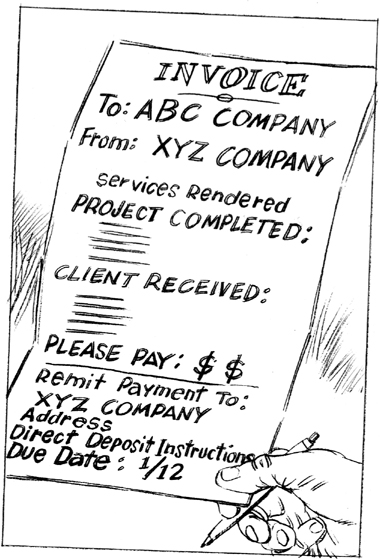
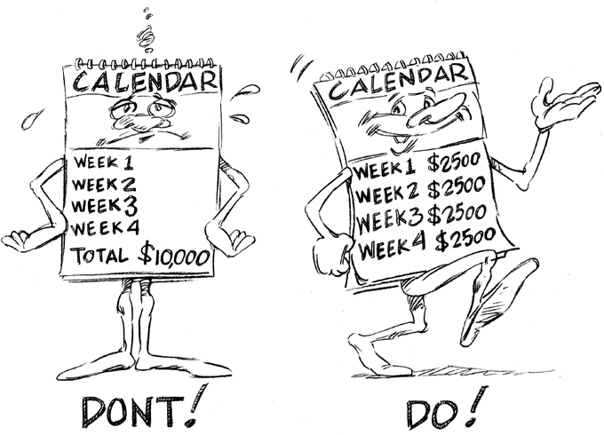

CHAPTER 6
Managing Your Cash Flow
More Is Better
So now you know how to read your Cash Flow Statement and use it to build a cash flow budget. Hopefully you’re convinced that conserving cash is vital to keeping your business alive, and that you need to closely manage the outflow of cash so every expense is serving to keep the business running rather than draining it of precious lifeblood.
The heart of cash flow management is the cash cycle. In most businesses, the cash cycle is based on terms of payment (which indicate the date full payment is due as well as under what conditions discounts can be taken) rather than a simple cash sale, and looks like this:
1. A sale is made.
2. The goods are shipped or the services are rendered.
3. As soon as the business has delivered, an invoice goes out with payment terms clearly stated.
4. Once the invoice is paid, the cash is deposited in the business’s account.
5. Operating expenses can now be paid.
In a perfect world, this cycle works seamlessly. In the real world, problems can arise at every step. Thus, every step must be managed. A lot of people who run small businesses mistakenly think that the only way to improve cash flow is to influence Step #1 in this cycle: selling more. But as you saw in the last chapter, booking more sales revenue on your Net Income Statement does not automatically put more cash in your bank account. There are a myriad of factors that influence how, when, and if that revenue converts to cash, and all of those factors come into play after Step #1. Credit extension, invoicing policy, payable policy, dealing with customers, and negotiating with suppliers, banks, and internal staff are all management disciplines that have a direct impact on the cash cycle. If these are handled well, a business can achieve optimal cash flow from existing operations. Sustainable cash flow from operations reduces pressure to increase sales or borrow cash from outside sources. If the cash cycle is poorly managed, however, or, as is often the case, simply ignored, then the business is guaranteed to suffer from cash deficit.
In this chapter, you’re going to learn some easy-to-implement strategies for streamlining your cash flow management and maximizing the amount of operating cash your business generates.
MANAGING YOUR CASH INFLOW
As you saw in the previous chapter, the primary reason cash comes into a business is that customers pay their bills. You also saw that most of the causes for a gap between revenue and cash have to do with how, when, or if customers pay their bills. Clearly, converting revenue to cash and improving cash flow has a lot to do with getting your customers to pay you, and especially with getting them to pay you on time.
Did you know that if a business doesn’t get paid for its products or services within 30 days of delivery, the chances of ever seeing that money goes down dramatically? If those same invoices are still unpaid after 60 days, the likelihood that the clients will pay them plummets even further. Aged and unpaid invoices can threaten the life of the business, as products go out or services are completed with no cash coming in. (And yes, “aged” means exactly what you think: These invoices are getting older.)
Unfortunately, many small businesses end up on life support because their managers fall prey to the following myths about how the business gets paid:
Myth: If the business delivered brilliantly for a client, then the client will automatically pay the bill.
Truth: If the business you manage does not have a payable policy that defines the terms of payment for every sale, and if that policy is not clearly communicated to the client, then it doesn’t matter how brilliantly the business delivered for the client. You could still end up holding a wad of invoices that may or may not get paid.
Myth: If the business delivers the final product for the customer, then the customer knows how much is owed on the project and will pay the bill promptly.
Truth: Only an invoice triggers the payment cycle. The client has no obligation to pay the bill until the invoice is received. If that invoice does not contain complete and accurate information, and if it is not sent to the client on a timely basis, then there is no guarantee that the client will pay the right amount at the right time. If the invoice goes out days, weeks, or months after the project is finished, then guess when payment will be received? Days, weeks, or months later than it should be.
Most small businesses don’t have a payable policy (or collections policy), and many of those that do struggle to communicate it effectively to staff, suppliers, and customers. Also, most small businesses, especially service businesses, don’t invoice the same day they complete work for a client. That’s the equivalent of committing cash flow hari kari. Customers are not going to look out for the health of your business’s cash flow. That’s your job.
Doing Due Diligence
Perhaps the most obvious way to protect your cash flow is to avoid doing business, whenever possible, with clients who are unlikely to pay their bills. Banks do this as a matter of procedure, as basic risk management. Banks will check the credit history of the business to determine if it has a good reputation for meeting its payment obligations. When a business offers payment terms for an order, it is effectively becoming a bank and extending a non-interest-bearing loan for the client. The business has to pay for cost of goods sold and all operating expenses until the client pays the bill. If a new corporate client asks you for payment terms, do the due diligence up front. Even if the client is a big name, check with its other suppliers to be sure the client pays its bills. If the client is a privately held company, ask for three references you can call to make sure they are credit-worthy. And actually go ahead and call them. Does it take time? Yes. Recovering from never-paid invoices also takes time. It’s always worth it to do risk management up front.
When I had Bedazzled, Inc., we sold to hundreds of boutiques, most of which were owned by individuals doing business under a corporate name. One boutique in Florida initially purchased our T-shirts on a cash-on-delivery (C.O.D.) basis. Over six months, we shipped four orders to them, each a little bigger than the last. For the first three orders, they had a check ready for us when the shipment arrived. Then, having established payment credibility, they requested 30-day payment terms for the fourth order. Guess what happened? They never paid us for that fourth, largest shipment.
Twenty years later, I can still get steamed over that unpaid invoice for one reason. It was my fault. After the fact, I checked with three other suppliers this guy did business with to see if it was just Bedazzled he had robbed. They all told me he never paid his bills. The irony is that the boutique owner had given me those references to check! He was betting I wouldn’t call them, and he was right. I learned an expensive lesson I’ll never forget. If I had only checked first, I would have saved the business thousands of dollars in lost cash. I thought I was too busy. Don’t make the same mistake.
Here’s another lesson I had to learn the hard way: Don’t get too excited when a potential client leaves your competition to buy from your business. Find out why they left the other company. In some cases, they leave because they have a bad habit of not paying their bills and they’re on the lookout for a new supplier that will give them … well, a free loan that never gets paid back.
Setting Your Payable Policy
Every business needs to have an established payable policy that defines the terms of payment for every sale. Customers need to know exactly when and how you expect them to pay you for services rendered or goods delivered. Clearly communicating these needs and expectations is essential to managing your cash flow risk.
Here are some key guidelines for developing and communicating an effective payable policy:
• Know the payable policy in your industry. Every industry has standard practices for payable policies, and most chambers of commerce can provide this information. Do customers typically pay in 30 days in your industry? Are they offered an early payment discount? Industry benchmarks vary and it’s your job to know what they are so you can align your policy with those expectations.
• Develop a payable policy that adjusts for variables such as order or project size and different types of clients. Your accountant can help you craft your payable policy so it not only falls within industry standards, but also is tailored to the business’s sales and clientele. Perhaps your payment terms should be different with large clients, frequent-purchase clients, or loyal long-term clients. You may also differentiate terms for large orders.
• Develop a payable policy that requires an initial deposit and specific interim payments for multi-phase or multi-month projects. If you’re allotting time and resources to put a new project on the calendar, the client should show good faith by paying an upfront fee to demonstrate how serious it is. After that initial deposit, invoices should go out as the project reaches progressive milestones of completion as specified in the contract, so that the outgoing expense of delivering the service and incoming cash payments stay in sync. This reduces payment risk and opportunity cost. If the client decides to pull the project, which can happen as circumstances or players change, at least the business will have received some compensation for the work completed up to that date.
Here’s a real-life story exemplifying this point, in painful spades. A designer I know spent six months working on a website. She invested hundreds of hours creating a wonderful, useful online asset for the client. She billed the client after all her work was through and she never got paid for it. If she had at least tried to get a deposit against the contract, she would have gotten an inkling that the client wasn’t serious about paying its bills before she did the work. Don’t get caught in that trap; insist on that initial deposit.
• Don’t keep payable policies a secret! Write your payable policy into all contracts for the business so that when a client signs, they know up front how and when they are expected to satisfy the invoices you send. Don’t wait to communicate payment policies until after the client has purchased, the invoice is aged, and you’re chasing around for payment.
• Communicate your payable policy to all relevant parties, not just clients. All your support staff and subcontractors need to know what your payable policy is. Your bookkeeper should know. Your accountant should know. Any part-time or full-time staff member should know. That payable policy is part of your business identity.
• Reinforce payable policies at every opportunity. Print your payable policy in the footer or the body of your invoices. Everyone needs reminders that you take getting paid seriously. If you don’t, why would clients take it seriously?
Designing Your Invoices
Nothing affects cash flow more directly than a business’s invoicing policy. Here are some key guidelines for designing invoices that will actually make customers happy to hand over their cash for your amazing goods and services:
Send invoices with confidence, not trepidation. If the business has delivered a great product or service to a client, the invoice merely indicates that this is an exchange of value—the business’s skill for the client’s money. Don’t be afraid to charge the client, and don’t wait to do it.
Rule #2: List the Benefits
An invoice is more than just a bill for services rendered; it’s a strategic document that can connect the dots between the benefit the client received from the business and the price you’re asking them to pay. Remember, customers don’t hire you to do work; they hire you to deliver results. Those results are the end-benefit the client receives for all the experience, hard work, and problem solving you provide. First, make sure you clearly describe the benefit the customer received for the work covered by the invoice. Did the business develop a new landing page that generated more site traffic? Did you take 100 photographs capturing the joy of a new marriage? Did you repair 50 cubic feet of damaged flooring and improve the safety of a home entrance? Write the benefit directly on the invoice above the price you’re asking them to pay.
Next, show the client the actual skill, labor, expertise, and sacrifice it took to get the job done (to achieve that benefit). If the number of staff hours is meaningful, be sure they are included on the invoice. This strategy of including the end-benefit the client receives as well as the effort required to complete the project provides a way to give value to the intangible.
By the time the customer gets to the price on the invoice, they know exactly what they’re paying for. The business you manage will get paid faster and cash flow will improve.
Rule #3: Quantify the Benefits
A lot of creative types get insulted when customers balk at the price of their services. But that’s just human nature. Customers need you to quantify the inputs required to deliver a wonderful outcome.
Savings are another huge benefit that customers love and need to see. Most people experience a certain satisfaction when they know they’ve gotten a great value for the price they’ve paid. That’s what you want to give to your clients. If the project cost the customer $1,000 while saving them $10,000, the savings should get captured on the invoice every single time. If you completed the job early, indicate the number of days or weeks that were saved on the invoice. If the job was brought in under budget, indicate the difference between the original quote and final price. If you, as the project manager, decided to “donate” two hours of time to complete the client’s project, indicate the two hours and the value they represent on the invoice, and cross out that cost and put “no-cost” or “0” cost. The client will see right away how much they saved.
I always include a line on an invoice reminding the client that I get the job done in a quarter of the time my competitors do. On a per-hour basis, I am well compensated. On a total-cost basis, the client gets the deal of the century. My invoices make that clear, and thus make my clients feel good about the money they’ve spent.
Rule #4: Personalize the Invoice
If you had a team of three people on the job, list their names. The customer then knows their job was not a commodity, but was shepherded by real people who cared about the outcome. Steve Jobs was a rabid believer in this concept—his original design team signed the inside of the first Apple Computers. It was pride of ownership.
Invoices become a running record of the value the business delivered for every client—a testimony of what’s been accomplished. Listing the benefits the client received is the key to differentiating your product or service from others. It will remind the client of what makes the business you manage different and more professional than that of your peers. It also supports a premium pricing strategy, which is key to getting a solid return on investment for your time. Invoices help to build the reputation of the business.

Invoicing Strategy
Now that you know how to approach designing your invoices, let’s talk about how and when to deliver them.
Same-Day Invoicing
Service businesses should invoice the client the same day they complete work for the client. It’s astounding to me how few service businesses follow this simple rule. Do not let the sun go down on the day you complete a project without invoicing the client!
I hired a Web developer to work on Best Small Biz Help.com who didn’t invoice me for nine months. That’s thousands of dollars of work his business should have received but didn’t. It’s important for me to keep my payables up to date because it’s my reputation on the line. As a client, I couldn’t pay the bill without knowing how much I owed! I called him five times to ask for an invoice. That’s a new twist—the client calls multiple times to ask for a bill. When I asked my rep who works with the firm what was going on, she said, “I hear this from many clients.” If you wanted to commit cash-flow suicide, this is the way to do it.
Learn the lesson. When you communicate your payable policy at the beginning of a project, let your client know that you will generate an invoice the same day the work is finished. That way there are no surprises. Then, as soon as the job is completed, send the invoice. Do it. The clock doesn’t start until the invoice is sent. The sooner the invoice is sent, the faster the business will get paid.
Confirm Receipt of Invoice
When you send an invoice, always confirm that the client received it. If you send the invoice via email, send it with a confirmation request. It is too important to get lost. It also provides a paper trail in case someone leaves the company or tries to give any excuses for why your bill wasn’t paid. If necessary, you can say, “You didn’t receive the invoice? That’s odd. I’m looking at the confirmation dated 11/11 saying you did.” Facts are better than dreams, as Churchill said.
Smaller Invoices, More Often
The key to invoicing is to make it easy for customers to pay you. I know that sounds painfully obvious, but you’d be amazed at how few business managers really get this. What happens when you receive a very large bill, even though you knew it was coming? A knot forms in the pit of your stomach. It becomes a burden. Smaller bites always digest better, don’t you agree?
For multi-thousand-dollar invoices, I recommend breaking them up into smaller dollar amounts and sending them out with greater frequency. That makes it a cinch for clients to pay you, which helps cash flow and reduces collections risk. It takes a little extra effort and forward planning, but that’s not significant when you think about what the business has to gain as a result.
Executive Producer Jane Applegate of The Applegate Group once invited me to videotape some business tips for her small business audience. During the shoot, the cameraman told me that he had done a shoot for a big accounting firm. Someone at the firm told him that when they started billing their clients weekly instead of monthly, they got paid 30 percent faster. The cameraman took this advice and started billing his customers weekly. Instead of invoicing them $2,000 per month, he started billing them $500 per week—and he started getting paid in 10 days instead of 60. I wish we had captured him on camera! A minor change in invoicing can have a dramatic effect on cash flow.

Keep Track of Outstanding Bills
It’s important to keep track of what invoices are outstanding (unpaid) and when payment is due according to your payable policy, and how long (“days outstanding”) any overdue bill has been languishing in the client’s To Be Paid pile. Every week you should know which invoices are due the following week. Most accounting software will keep track of the age of invoices with a click of a button. If you don’t know how, ask your bookkeeper to pull the report to show aging invoices. This aging invoices report will show:
• All the invoices that haven’t been paid yet.
• The due date for payment of each invoice and days outstanding.
• The amount due on each invoice.
• The client responsible for each invoice.
You can see how useful this report will be.
It’s a good sign if the average number of days outstanding for your invoices is less than 30 days. It means someone’s calling clients on a regular basis to make sure invoices get paid. The shorter the days outstanding, the faster the business converts invoices into cash payments. As you now know, an outstanding invoice older than 30 days is much less likely to get paid.
Call Clients as Payment Date Approaches
Successful business managers know they are in the collections business, whether they like it or not. They get on the phone to collect payment. They know that calling two days before a due date, not after it, will help to preserve client relationships. Why? When you call the client before payment is due, it’s a happy call. It’s a check-up call. You’re giving the client the benefit of the doubt that they will pay the bill in good faith. You’re just shepherding the process along. You want to do everything possible to make sure payments are processed efficiently. Ask if there is anything you can do to facilitate the payment process. Do they have all your information? Is it accurate? Does cutting a check take longer than doing a wire transfer? If there is required paperwork to have wire-transfer payments, offer to fill them out and return them the same day. You might get paid sooner.
Specifically, I recommend calling clients between Tuesday and Thursday. Mondays are usually too hectic and on Friday everyone’s distracted before the weekend. Call either before or after lunch time. I like to call around 10 A.M. That gives someone a chance to wrestle the early-morning gremlins to the ground and is before their stomachs start growling for lunch. I promise—it’s painless.
Build a Relationship with Susie
When you call a large client to check on your unpaid invoice, there’s a good chance that you’ll be talking to Susie. Who’s Susie? She’s the accounts payable clerk for your client. She’s the one who cuts the checks at the end of the month. Susie is probably the most under-appreciated, underpaid person on planet Earth, yet she “holds the keys to the kingdom” for small businesses. She manages the cash position at the client. She is often the one determining who gets paid, how much they get paid, and when they get paid. There is a pecking order of who gets paid first at the client. They’ll probably never tell you this, but it’s real and you should know about it. Suppliers who provide goods and services that are unique or difficult to substitute always get first priority when it comes to getting paid. Since, as a small business manager, it’s unlikely that you are the behemoth at the front of the line, the better your relationship with Susie, the more likely you are to get paid sooner rather than later.
Most small business managers spend a lot of time building relationships with the people who sign the purchase orders for their clients, but they never meet the people who ultimately sign the checks. Never forget that generating sales revenue is great, but getting paid is even greater. Find out who “Susie” is at each large client the business sells to. If possible, go meet her in person, shake her hand, and look her in the eye. When she sends you a check for payment, send her a handwritten “thank you” note by snail mail. I’m not kidding. Take the time. Why? Because no one but you appreciates how important Susie is to your business. Susie never, ever gets a thank-you note. She’s completely taken for granted by everyone. You won’t make that same mistake, and for this reason, you won’t be a stranger to her when she sees your invoice. You might even consider taking her out for lunch on occasion. When you do, ask her, “So, how’s it going?” You’ll be amazed at what you’ll learn.
Here’s a true story about a lunch that paid for itself many, many times over. Years ago, I took the accounts payable clerk at a client out for lunch. He told me the client was about to go bankrupt—and about to default on paying my bill. The same day, I spoke to my lawyer and sent a formal correspondence to the client terminating our contract due to the fact that they had no means to support the remainder of our agreement. I respectfully ended my professional relationship with that client before the client ran out of money and was unable to pay future invoices. It was a close call. Thankfully, because I had already built a trust relationship with the accounts payable clerk, he was forthcoming and I was able to do some risk management before everything blew up. At least I would incur no further losses.
You always need to manage your relationship with the actual human being who is handling your invoices. This holds true even if the client is a municipality or government agency. The person who pays the bills is a real live person just like Susie, not some faceless bureaucrat. I once did a significant amount of work on a training program for a government-sponsored agency in my state. I sent the invoice on time, but after five months, I still hadn’t been paid. Now, most government agencies march to a different drummer than the rest of the world when it comes to paying bills, so I knew it would take a while to get paid. The thing was, the colleague with whom I worked side by side on this program had submitted her invoice at the same time I did, and was paid within 30 days. It didn’t make sense.
I called my contact at the agency we did the work for and, after a long runaround, managed to find out who the accounts payable clerk was. She happened to be located 500 miles away. When I called the clerk, I didn’t nag, though I wasn’t happy about having delivered a superb program and not getting paid within a reasonable time. I told her that I just wanted to know if my invoice was in the system and what might be holding up payment. Was all my payment information accurately put into the payment system? Was the invoice lost? Should I have included other information on the invoice? I also asked her if there was anything I could do to make her job easier. (When was the last time anyone asked you that question?)
In short, the accounts payable clerk was wonderful. I’ve forgotten her name, but not her kindness. I got paid within five business days.
In addition to building rapport with Susie, small business managers will do themselves a huge favor by understanding the world from her viewpoint.
Tailor Your Invoices to Susie’s Sign-Off Privileges
Ask Susie about the limits of her sign-off privileges and keep your invoices within those limits. Commonly, Susie will have sign-off privileges for smaller invoices, typically under $5,000. If an invoice arrives that is larger than her sign-off privileges, she needs her boss or her boss’s boss to give approval to cut the check. Why? It’s good risk management at the client to make sure there’s no fraud and their cash flow is protected. The problem for you is that when your large invoice has to be sent up the management chain to get the required sign-offs, the wheels slow way down. The larger the invoice, the more sign-offs are required to release the cash to pay it, and the greater will be the delay in receiving payment.
You should expect payment policies and cutoffs to become more restrictive when a business is operating in an economy that is not growing, because your clients are trying to manage their risk like everyone else is. If Susie had $5,000 sign-off privileges when the economy was booming, her sign-off privileges might fall to half of that when sales revenue drops and cash is tighter. This is perfectly normal—you just need to know how to anticipate and manage it. If you sent out $5,000 invoices before, you should start sending out $2,500 invoices, with greater frequency, if the total outstanding invoice is large. If the customer writes a big order, stagger-ship the order so you can stagger-invoice the client. Then, if the client has problems paying, you won’t be out the entire value of the order. (I would have made a lot more money if I had followed this advice 15 years ago.)
Tailor Your Billing Cycle to Susie’s Payment Cycle
Ask Susie what the payment cycle is at the client, and send invoices to coincide with it. Most companies pay bills every two weeks or every month on a certain date. Put those dates in your calendar or make your bookkeeper or accountant aware of them so you can send invoices in advance of each check-cutting date. Verify once a quarter that the process is still the same. If you send an invoice right after those cutoffs, you’ll have to wait until the next check-cutting cycle to get paid. Waiting to get paid always costs money and squeezes cash flow.
MANAGING YOUR CASH OUTFLOW
In the last chapter, I emphasized how critical it is to conserve the lifeblood of your business by keeping a tight rein on business expenses, and I warned you about some cash-burning traps to avoid. Here I want to give you two more strategies for minimizing your cash outflow.
Control Subcontractor Fees
Most businesses will subcontract individuals or businesses for various services. Online marketing is a common example. Unfortunately, there are a lot of people out there promising to drive relevant traffic to a website or blog and delivering very little for a whole lot of money. How can you protect the business? Spread the risk. Hire resources that are eager to get paid on a performance basis, not just a flat-fee basis. This will encourage your search engine optimization expert to act as a collaborator who is just as invested in your success as you are. Structure the payout so the SEO expert gets paid more if site statistics improve dramatically than if you just paid him or her on a fixed cost basis. This way you spread your risk of non-performance and conserve cash at the same time. If your small business website succeeds, you’re happy to compensate the people who helped you get there. And if it doesn’t, you’re not left holding a large bill with nothing to show for it.
Another way to conserve cash is to limit the time your subcontractor invests in a project. I negotiated with one of my paid contributors to invest no more than two hours when developing an article for Best Small Biz Help.com. So I pay her a flat fee per article. If she can be more efficient and create a terrific article in less time, her hourly rate effectively goes up.
Ask Your Suppliers for a Discount
If the business you manage pays its bills on time and its checks never bounce, you have negotiating leverage with suppliers. Even if the business is a small customer to the supplier, a great payment history means you can ask your suppliers for either a discount or added value that could ultimately bring greater cash value to the business.
Review the current terms you have with each supplier. Usually, the terms are net 30 days, which means payment is due within 30 days after the order is placed. Ask for a 5 percent discount for payment on delivery or payment by cash if you pay the bill within 10 days. If the supplier balks, don’t argue about the idea of a discount—argue about how large the discount should be! If you do this with every supplier, you’ll be shocked at how much money you can save. The first task is to do your homework. Know if the supplier’s competition is offering discounts for early payment. Have that knowledge so you can counter your supplier’s offer with real data. Your suppliers will respect you and go the extra mile—especially in soft markets—but only if the business you manage pays its bills on time.
One of the most successful and well-respected entrepreneurs I know in New York City was a true collaborator with his suppliers, but he made sure his account was never taken for granted. Every year, he reviewed supplier contracts, combed the market for deals, and then asked for either a discount or extra value for his account. Sometimes it meant getting shipped a “baker’s dozen” (13 units) of a supply while getting charged for only 12. Other suppliers offered free passes to trade shows or provided training programs for staff members.
Suppliers have great networks and knowledge, and few customers take advantage of the influence they can have. Perhaps a supplier’s resident expert can come to the business you manage and hold a brief seminar on a topic that matters to you or your staff. Building your intellectual capital like this can add real value to the business. But if you never ask, you’ll never receive.
Bank Fees and Charges
Don’t let your bank overcharge you. Know what all the fees and charges are. These days, they can be significant. Investigate what the banking competition is charging, including small local banks, and be prepared to hop to a new resource after you close your books at year-end if the charges are climbing too fast. Small local banks often give better service, charge the same or lower fees, and are less likely to treat a small business poorly.
There are thousands of businesses who are paying debit and credit card fees they shouldn’t be paying. I once had coffee with a bookkeeper who does credit card transaction audits for small businesses. His job is to find ways to reduce the expense of credit card purchases for his clients. He told me that if the business you manage accepts debit cards for purchases, there’s a very high likelihood the bank is charging the same interchange fee on debit card transactions that it is on credit card transactions. This is inappropriate, because debit card purchases are very different from credit card purchases. Debit cards decrease cash that’s been deposited in an account—just like writing a check. In contrast, a credit card account extends credit to the buyer to be able to make the purchase from the retailer. It’s a short-term loan, and it carries a greater risk to the bank. The bank should not charge the same fee to debit cash that’s already there that it charges when it extends credit to complete a transaction. The interchange rate for a debit card transaction should always be lower than for a credit card transaction.
If the small business you manage accepts both credit and debit cards to satisfy payment, check the statements from the acquiring bank and look at the rates the business is being charged for debit card purchases. Make sure your debit card transactions are not overcharging your business. Reduce those fees and increase your cash!
* * *
I don’t know about you, but if I invest my soul in a project for a client, bill them, and then don’t get paid for that work, it puts a real crimp in my attitude. I’ve paid for my learning curve on how to manage the cash cycle so that I can avoid that situation whenever possible. I promise you that the strategies you’ve learned in this chapter have the potential to dramatically improve your odds of getting fully paid, on time. These cash flow tips may not seem terribly interesting—until you hear war stories about suppliers who lost their businesses and their home because clients never paid them. The stakes are very high. You’re an insider now. No excuses.
KEY TAKEAWAYS
 Know what the payable policy standards are in your industry, and use these as a benchmark.
Know what the payable policy standards are in your industry, and use these as a benchmark.
 Communicate payable policies for the business in writing on all contracts and invoices.
Communicate payable policies for the business in writing on all contracts and invoices.
 Communicate payable policies to all staff, subcontractors, and suppliers up front so there are no surprises when cash has to change hands.
Communicate payable policies to all staff, subcontractors, and suppliers up front so there are no surprises when cash has to change hands.
 Invoices are strategic documents. Use them to reinforce the value the customer received.
Invoices are strategic documents. Use them to reinforce the value the customer received.
 If a project has multiple phases, receive a deposit up front and invoice the customer as project milestones are reached.
If a project has multiple phases, receive a deposit up front and invoice the customer as project milestones are reached.
 When the business has delivered a product or service to clients, send out the invoices the same day. Don’t wait.
When the business has delivered a product or service to clients, send out the invoices the same day. Don’t wait.
 Get acknowledgments in writing that invoices have been received at the client.
Get acknowledgments in writing that invoices have been received at the client.
 Call clients to collect on invoices that are approaching a 30-day age to ascertain when payment will occur and what you can do to expedite it.
Call clients to collect on invoices that are approaching a 30-day age to ascertain when payment will occur and what you can do to expedite it.
 Meet Susie, the accounts payable clerk at the client. Develop an authentic appreciation for what she does. She’ll help you manage your cash flow risk.
Meet Susie, the accounts payable clerk at the client. Develop an authentic appreciation for what she does. She’ll help you manage your cash flow risk.
 Know the payment cycle at the client and send invoices to coordinate with that cycle.
Know the payment cycle at the client and send invoices to coordinate with that cycle.
 If the client owes the business a lot of money, generate more invoices with smaller values and greater frequency to avoid approval purgatory. The business will get paid faster.
If the client owes the business a lot of money, generate more invoices with smaller values and greater frequency to avoid approval purgatory. The business will get paid faster.
 Ask for discounts for early payments and cash payments.
Ask for discounts for early payments and cash payments.
 Make sure your bank is not overcharging you.
Make sure your bank is not overcharging you.